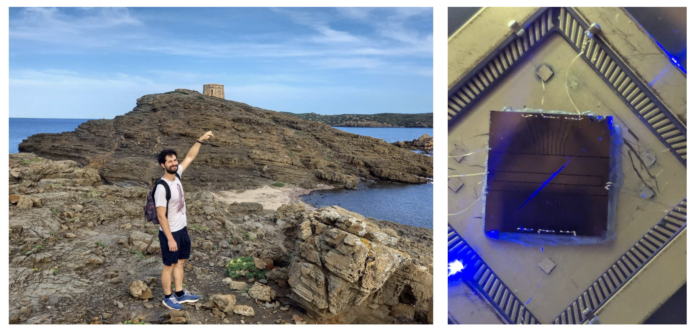

My name is Valentin Cambier, I am an assistant professor at Université Paris-Cité in the Quantum Information and TEchnologies (QITE) team among the MPQ lab. My interests lie in atomic physics and quantum information science. My research focuses on trapped ions on microfabricated chips and their applications in cutting-edge quantum technologies. From exploring atomic physics phenomena, to designing the next generation of ion chips integrating advanced optical waveguides and on-chip photonics, my work bridges fundamental physics and practical engineering. A key part of my research also revolves around developing efficient ion-photon interfaces for scalable quantum networks. If you're interested in internships, PhD projects, postdoctoral positions, or collaborations, feel free to reach out—I'm always excited to discuss new ideas and opportunities!
Content to be added...